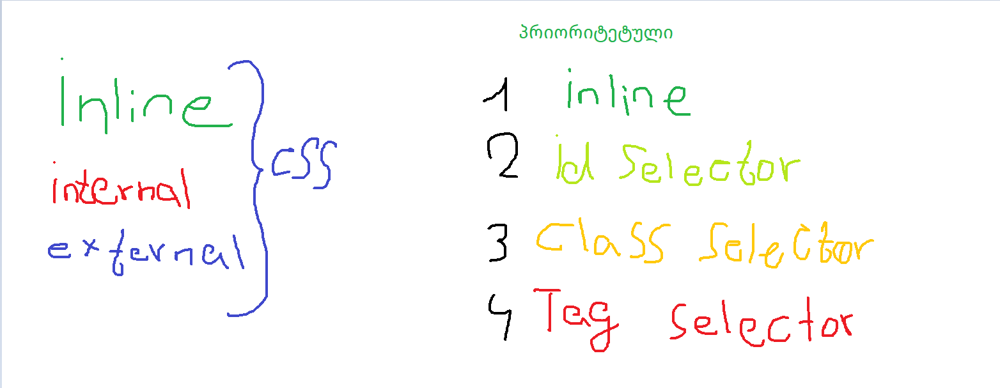

css - ის წესები :

CSS-ის HTML-ფაილში გამოყენების სამი გზა არსებობს:
- inline css - დიზაინსი გასტილვა ხდება პირდაპირ html ელემენტზე style ატრიბუტით.
- internal css - დიზაინსი გასტილვა ხდება html ფაილში style თეგით რომელიც იწერება head-ში.
- external css - დიზაინსი გასტილვა ხდება ცალკე css ფაოლში რომელიც უკავშირდება html - ის ფაილს link - ით.
algorithm of Specificity :
algorithm of Specificity - არის css - ის ალგორითმი ,
რომელიც ასრულებს ელემენტებზე გადასვლას ,
იმის
მიხედვით თუ
რომელი ეელემენტი უფრო პრიორიტეტულია
inline , id celector , class selector , teg selector , --- ეს სელექტორები არის ერთმანეთზე
პრიორიტეტული და დიზაინის გასტილვისას
შეგვიძლია ერთმანეთზე გადავაწეროთ სპეციპიკურობის css ალგორითმის წესით სტილები.
Internal CSS Rule

ეს არის Internal CSS - ის წესი .
style - არის Internal CSS - ის თეგი ,
რომელშიც იწერება სელექტორი
სელექტორში იწერება დეკლარაცია რომელშიც შედის
ფროფერთი და მნიშვნელობა
სელექტორში შემავალი მნიშვნელობები არის წესი .